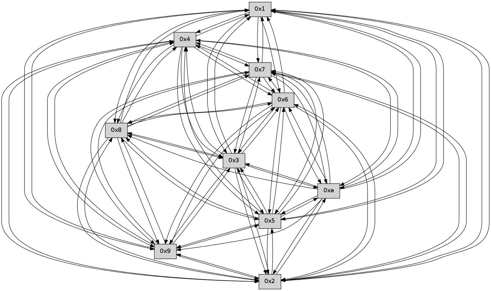

>> << IDX [start] -100 -25 -5 +0 +5 +25 +100 [215.588024139]
 Previous packets
----------------------------------------------------------------------
210.071100 beacon01(faad) #0 coord=01,02,03,04,05,06,07,0a,09,08 cycle=688.0ms assoc
-- color-indic=0 64 1e 22
210.081083 beacon02(faad) #0 coord=01,02,03,04,05,06,07,0a,09,08 cycle=688.0ms assoc 64 8d 13
210.091082 beacon03(faad) #0 coord=01,02,03,04,05,06,07,0a,09,08 cycle=688.0ms assoc 64 f7 5e
210.101084 beacon04(faad) #0 coord=01,02,03,04,05,06,07,0a,09,08 cycle=688.0ms assoc 64 80 b4
210.111082 beacon05(faad) #0 coord=01,02,03,04,05,06,07,0a,09,08 cycle=688.0ms assoc 64 fa f9
210.121083 beacon06(faad) #0 coord=01,02,03,04,05,06,07,0a,09,08 cycle=688.0ms assoc 64 74 2e
210.131084 beacon07(faad) #0 coord=01,02,03,04,05,06,07,0a,09,08 cycle=688.0ms assoc 64 0e 63
210.141086 beacon0a(faad) #0 coord=01,02,03,04,05,06,07,0a,09,08 cycle=688.0ms assoc 64 7f 68
210.151089 beacon09(faad) #0 coord=01,02,03,04,05,06,07,0a,09,08 cycle=688.0ms assoc 64 f1 bf
210.161090 beacon08(faad) #0 coord=01,02,03,04,05,06,07,0a,09,08 cycle=688.0ms assoc 64 8b f2
210.172245 [Hello(4): seq=139 sym=5,7,6,2,3,9,8,10,1 sysInfo= stat=5:11,0,0,0/7:3,0,0,0/6:4,0,0,0/2:14,0,0,0/3:11,0,0,0/9:4,0,0,0/8:8,0,0,0/10:6,0,0,0/1:0,0,0,0]
210.176193 [Hello(3): seq=139 sym=5,7,6,4,2,8,9,10,1 sysInfo= stat=5:13,0,0,0/7:9,0,0,0/6:4,0,0,0/4:10,0,0,0/2:13,0,0,0/8:12,0,0,0/9:7,0,0,0/10:9,0,0,0/1:5,0,0,0]
210.181157 [Hello(5): seq=139 sym=7,6,4,2,3,9,8,10,1 sysInfo= stat=7:13,0,0,0/6:10,0,0,0/4:7,0,0,0/2:2,0,0,0/3:0,0,0,0/9:3,0,0,0/8:13,0,0,0/10:5,0,0,0/1:1,0,0,0]
210.192169 [Hello(2): seq=137 sym=4,5,7,6,3,9,8,10,1 sysInfo= stat=4:7,0,0,0/5:12,0,0,0/7:0,0,0,0/6:6,0,0,0/3:9,0,0,0/9:9,0,0,0/8:7,0,0,0/10:0,0,0,0/1:12,0,0,0]
----------------------------------------------------------------------
210.859232 beacon01(faad) #0 coord=01,02,03,04,05,06,07,0a,09,08 cycle=688.0ms assoc
-- color-indic=0 64 a2 27
210.869215 beacon02(faad) #0 coord=01,02,03,04,05,06,07,0a,09,08 cycle=688.0ms assoc 64 31 16
210.879214 beacon03(faad) #0 coord=01,02,03,04,05,06,07,0a,09,08 cycle=688.0ms assoc 64 4b 5b
210.889216 beacon04(faad) #0 coord=01,02,03,04,05,06,07,0a,09,08 cycle=688.0ms assoc 64 3c b1
210.899214 beacon05(faad) #0 coord=01,02,03,04,05,06,07,0a,09,08 cycle=688.0ms assoc 64 46 fc
210.909215 beacon06(faad) #0 coord=01,02,03,04,05,06,07,0a,09,08 cycle=688.0ms assoc 64 c8 2b
210.919215 beacon07(faad) #0 coord=01,02,03,04,05,06,07,0a,09,08 cycle=688.0ms assoc 64 b2 66
210.929222 beacon0a(faad) #0 coord=01,02,03,04,05,06,07,0a,09,08 cycle=688.0ms assoc 64 c3 6d
210.939221 beacon09(faad) #0 coord=01,02,03,04,05,06,07,0a,09,08 cycle=688.0ms assoc 64 4d ba
210.949220 beacon08(faad) #0 coord=01,02,03,04,05,06,07,0a,09,08 cycle=688.0ms assoc 64 37 f7
210.960395 [Hello(10): seq=71 sym=6,3,2,5,9,8,7,4,1 sysInfo= stat=6:8,0,0,0/3:13,0,0,0/2:0,0,0,0/5:2,0,0,0/9:10,0,0,0/8:7,0,0,0/7:11,0,0,0/4:15,0,0,0/1:10,0,0,0]
210.963542 [Hello(8): seq=82 sym=5,2,3,4,7,6,9,10,1 sysInfo= stat=5:14,0,0,0/2:14,0,0,0/3:1,0,0,0/4:7,0,0,0/7:13,0,0,0/6:1,0,0,0/9:3,0,0,0/10:12,0,0,0/1:8,0,0,0]
210.966264 [Hello(9): seq=82 sym=5,2,3,4,7,6,8,10,1 sysInfo= stat=5:4,0,0,0/2:6,0,0,0/3:12,0,0,0/4:0,0,0,0/7:15,0,0,0/6:4,0,0,0/8:5,0,0,0/10:14,0,0,0/1:4,0,0,0]
210.969427 [Hello(6): seq=139 sym=2,3,5,4,7,9,8,10,1 sysInfo= stat=2:3,0,0,0/3:13,0,0,0/5:7,0,0,0/4:8,0,0,0/7:6,0,0,0/9:13,0,0,0/8:11,0,0,0/10:9,0,0,0/1:4,0,0,0]
210.972790 [Hello(7): seq=139 sym=2,3,5,6,4,8,9,10,1 sysInfo= stat=2:14,0,0,0/3:13,0,0,0/5:10,0,0,0/6:1,0,0,0/4:3,0,0,0/8:8,0,0,0/9:7,0,0,0/10:6,0,0,0/1:7,0,0,0]
----------------------------------------------------------------------
211.647363 beacon01(faad) #0 coord=01,02,03,04,05,06,07,0a,09,08 cycle=688.0ms assoc
-- color-indic=0 64 66 29
211.657346 beacon02(faad) #0 coord=01,02,03,04,05,06,07,0a,09,08 cycle=688.0ms assoc 64 f5 18
211.667345 beacon03(faad) #0 coord=01,02,03,04,05,06,07,0a,09,08 cycle=688.0ms assoc 64 8f 55
211.677346 beacon04(faad) #0 coord=01,02,03,04,05,06,07,0a,09,08 cycle=688.0ms assoc 64 f8 bf
211.687347 beacon05(faad) #0 coord=01,02,03,04,05,06,07,0a,09,08 cycle=688.0ms assoc 64 82 f2
211.697347 beacon06(faad) #0 coord=01,02,03,04,05,06,07,0a,09,08 cycle=688.0ms assoc 64 0c 25
211.707348 beacon07(faad) #0 coord=01,02,03,04,05,06,07,0a,09,08 cycle=688.0ms assoc 64 76 68
211.717353 beacon0a(faad) #0 coord=01,02,03,04,05,06,07,0a,09,08 cycle=688.0ms assoc 64 07 63
211.727351 beacon09(faad) #0 coord=01,02,03,04,05,06,07,0a,09,08 cycle=688.0ms assoc 64 89 b4
211.737351 beacon08(faad) #0 coord=01,02,03,04,05,06,07,0a,09,08 cycle=688.0ms assoc 64 f3 f9
211.752465 [Hello(5): seq=140 sym=7,6,4,2,3,9,8,10,1 asym= sysInfo= stat=7:14,0,0,0/6:11,0,0,0/4:7,0,0,0/2:3,0,0,0/3:0,0,0,0/9:4,0,0,0/8:14,0,0,0/10:6,0,0,0/1:1,0,0,0]
211.758741 PARSE ERROR************************
Traceback (most recent call last):
File "PacketAnalysis.py", line 167, in showOperaPacket
structPacket = OperaPacketParse.parsePacket(rawPacket)
File "../../pkg-python/HipSens/Core/OperaPacketParse.py", line 461, in parsePacket
return parseHelloMessage(data)
File "../../pkg-python/HipSens/Core/OperaPacketParse.py", line 127, in parseHelloMessage
assert struct.calcsize("H")*len(neighAddrList) == len(linkList)
AssertionError
48 34 01 00 00 30 00 02 02 12 04 00 02 00 09 00 05 00 0a 00 03 00 08 00 06 00 07 00 53 04 00 00 00 00 4c 12 00 06 00 0a 00 06 00 0c 00 0f 00 07 00 02 00 08 00 08 4c 68
211.762682 [Hello(2): seq=138 sym=4,5,7,6,3,9,8,10,1 sysInfo= stat=4:7,0,0,0/5:12,0,0,0/7:1,0,0,0/6:7,0,0,0/3:9,0,0,0/9:10,0,0,0/8:8,0,0,0/10:1,0,0,0/1:12,0,0,0]
----------------------------------------------------------------------
212.435495 beacon01(faad) #0 coord=01,02,03,04,05,06,07,0a,09,08 cycle=688.0ms assoc
-- color-indic=0 64 da 2c
212.445477 beacon02(faad) #0 coord=01,02,03,04,05,06,07,0a,09,08 cycle=688.0ms assoc 64 49 1d
212.455477 beacon03(faad) #0 coord=01,02,03,04,05,06,07,0a,09,08 cycle=688.0ms assoc 64 33 50
212.465477 beacon04(faad) #0 coord=01,02,03,04,05,06,07,0a,09,08 cycle=688.0ms assoc 64 44 ba
212.475478 beacon05(faad) #0 coord=01,02,03,04,05,06,07,0a,09,08 cycle=688.0ms assoc 64 3e f7
212.485478 beacon06(faad) #0 coord=01,02,03,04,05,06,07,0a,09,08 cycle=688.0ms assoc 64 b0 20
212.495478 beacon07(faad) #0 coord=01,02,03,04,05,06,07,0a,09,08 cycle=688.0ms assoc 64 ca 6d
212.505484 beacon0a(faad) #0 coord=01,02,03,04,05,06,07,0a,09,08 cycle=688.0ms assoc 64 bb 66
212.515482 beacon09(faad) #0 coord=01,02,03,04,05,06,07,0a,09,08 cycle=688.0ms assoc 64 35 b1
212.525483 beacon08(faad) #0 coord=01,02,03,04,05,06,07,0a,09,08 cycle=688.0ms assoc 64 4f fc
212.536640 [Hello(7): seq=140 sym=2,3,5,6,4,8,9,1 sysInfo= stat=2:15,0,0,0/3:14,0,0,0/5:11,0,0,0/6:1,0,0,0/4:3,0,0,0/8:8,0,0,0/9:7,0,0,0/1:8,0,0,0]
212.539024 [Hello(9): seq=83 sym=5,2,3,4,7,6,8,1 sysInfo= stat=5:5,0,0,0/2:7,0,0,0/3:12,0,0,0/4:1,0,0,0/7:0,0,0,0/6:5,0,0,0/8:5,0,0,0/1:5,0,0,0]
212.541901 [Hello(10): seq=72 sym=6,3,2,5,9,8,7,4,1 sysInfo= stat=6:9,0,0,0/3:14,0,0,0/2:1,0,0,0/5:3,0,0,0/9:11,0,0,0/8:8,0,0,0/7:12,0,0,0/4:15,0,0,0/1:11,0,0,0]
212.546332 [Hello(8): seq=83 sym=5,2,3,4,7,6,9,1 sysInfo= stat=5:15,0,0,0/2:15,0,0,0/3:2,0,0,0/4:7,0,0,0/7:14,0,0,0/6:2,0,0,0/9:4,0,0,0/1:9,0,0,0]
212.551622 [Hello(6): seq=140 sym=2,3,5,4,7,9,8,10,1 sysInfo= stat=2:4,0,0,0/3:14,0,0,0/5:8,0,0,0/4:8,0,0,0/7:7,0,0,0/9:13,0,0,0/8:11,0,0,0/10:9,0,0,0/1:5,0,0,0]
----------------------------------------------------------------------
213.223625 beacon01(faad) #0 coord=01,02,03,04,05,06,07,0a,09,08 cycle=688.0ms assoc
-- color-indic=0 64 7d 5c
213.233609 beacon02(faad) #0 coord=01,02,03,04,05,06,07,0a,09,08 cycle=688.0ms assoc 64 ee 6d
213.243608 beacon03(faad) #0 coord=01,02,03,04,05,06,07,0a,09,08 cycle=688.0ms assoc 64 94 20
213.253609 beacon04(faad) #0 coord=01,02,03,04,05,06,07,0a,09,08 cycle=688.0ms assoc 64 e3 ca
213.263607 beacon05(faad) #0 coord=01,02,03,04,05,06,07,0a,09,08 cycle=688.0ms assoc 64 99 87
213.273608 beacon06(faad) #0 coord=01,02,03,04,05,06,07,0a,09,08 cycle=688.0ms assoc 64 17 50
213.283610 beacon07(faad) #0 coord=01,02,03,04,05,06,07,0a,09,08 cycle=688.0ms assoc 64 6d 1d
213.293614 beacon0a(faad) #0 coord=01,02,03,04,05,06,07,0a,09,08 cycle=688.0ms assoc 64 1c 16
213.303614 beacon09(faad) #0 coord=01,02,03,04,05,06,07,0a,09,08 cycle=688.0ms assoc 64 92 c1
213.313613 beacon08(faad) #0 coord=01,02,03,04,05,06,07,0a,09,08 cycle=688.0ms assoc 64 e8 8c
213.324479 [Hello(1): seq=49 sym=4,2,9,5,10,3,8,6,7 sysInfo= stat=4:6,0,0,0/2:11,0,0,0/9:7,0,0,0/5:12,0,0,0/10:0,0,0,0/3:7,0,0,0/8:3,0,0,0/6:9,0,0,0/7:9,0,0,0]
213.327798 [Hello(4): seq=141 sym=5,7,6,2,3,9,8,10,1 sysInfo= stat=5:13,0,0,0/7:5,0,0,0/6:6,0,0,0/2:0,0,0,0/3:12,0,0,0/9:6,0,0,0/8:10,0,0,0/10:8,0,0,0/1:1,0,0,0]
213.330335 [Hello(2): seq=139 sym=4,5,7,6,3,9,8,10,1 sysInfo= stat=4:7,0,0,0/5:12,0,0,0/7:2,0,0,0/6:8,0,0,0/3:9,0,0,0/9:11,0,0,0/8:9,0,0,0/10:2,0,0,0/1:12,0,0,0]
213.333680 [Hello(5): seq=141 sym=7,6,4,2,3,9,8,10,1 sysInfo= stat=7:15,0,0,0/6:12,0,0,0/4:7,0,0,0/2:4,0,0,0/3:0,0,0,0/9:5,0,0,0/8:15,0,0,0/10:7,0,0,0/1:2,0,0,0]
213.342474 [Hello(3): seq=141 sym=5,7,6,4,2,8,9,10,1 sysInfo= stat=5:15,0,0,0/7:11,0,0,0/6:6,0,0,0/4:10,0,0,0/2:15,0,0,0/8:14,0,0,0/9:9,0,0,0/10:11,0,0,0/1:6,0,0,0]
----------------------------------------------------------------------
214.011757 beacon01(faad) #0 coord=01,02,03,04,05,06,07,0a,09,08 cycle=688.0ms assoc
-- color-indic=0 64 c1 59
214.021739 beacon02(faad) #0 coord=01,02,03,04,05,06,07,0a,09,08 cycle=688.0ms assoc 64 52 68
214.031739 beacon03(faad) #0 coord=01,02,03,04,05,06,07,0a,09,08 cycle=688.0ms assoc 64 28 25
214.041740 beacon04(faad) #0 coord=01,02,03,04,05,06,07,0a,09,08 cycle=688.0ms assoc 64 5f cf
214.051741 beacon05(faad) #0 coord=01,02,03,04,05,06,07,0a,09,08 cycle=688.0ms assoc 64 25 82
214.061740 beacon06(faad) #0 coord=01,02,03,04,05,06,07,0a,09,08 cycle=688.0ms assoc 64 ab 55
214.071740 beacon07(faad) #0 coord=01,02,03,04,05,06,07,0a,09,08 cycle=688.0ms assoc 64 d1 18
214.081744 beacon0a(faad) #0 coord=01,02,03,04,05,06,07,0a,09,08 cycle=688.0ms assoc 64 a0 13
214.091726 beacon09(faad) #0 coord=01,02,03,04,05,06,07,0a,09,08 cycle=688.0ms assoc 64 2e c4
214.101745 beacon08(faad) #0 coord=01,02,03,04,05,06,07,0a,09,08 cycle=688.0ms assoc 64 54 89
214.112916 [Hello(7): seq=141 sym=2,3,5,6,4,8,9,10,1 sysInfo= stat=2:0,0,0,0/3:15,0,0,0/5:12,0,0,0/6:2,0,0,0/4:4,0,0,0/8:9,0,0,0/9:8,0,0,0/10:0,0,0,0/1:9,0,0,0]
214.116224 [Hello(6): seq=141 sym=2,3,5,4,7,9,8,10,1 sysInfo= stat=2:5,0,0,0/3:15,0,0,0/5:9,0,0,0/4:9,0,0,0/7:7,0,0,0/9:13,0,0,0/8:11,0,0,0/10:9,0,0,0/1:6,0,0,0]
214.119263 [Hello(10): seq=73 sym=6,3,2,5,9,8,7,4,1 sysInfo= stat=6:10,0,0,0/3:15,0,0,0/2:2,0,0,0/5:4,0,0,0/9:11,0,0,0/8:9,0,0,0/7:12,0,0,0/4:0,0,0,0/1:12,0,0,0]
214.122439 [Hello(8): seq=84 sym=5,2,3,4,7,6,9,1 sysInfo= stat=5:0,0,0,0/2:0,0,0,0/3:3,0,0,0/4:8,0,0,0/7:14,0,0,0/6:3,0,0,0/9:4,0,0,0/1:10,0,0,0]
----------------------------------------------------------------------
214.799889 beacon01(faad) #0 coord=01,02,03,04,05,06,07,0a,09,08 cycle=688.0ms assoc
-- color-indic=0 64 05 57
214.809872 beacon02(faad) #0 coord=01,02,03,04,05,06,07,0a,09,08 cycle=688.0ms assoc 64 96 66
214.819871 beacon03(faad) #0 coord=01,02,03,04,05,06,07,0a,09,08 cycle=688.0ms assoc 64 ec 2b
214.829871 beacon04(faad) #0 coord=01,02,03,04,05,06,07,0a,09,08 cycle=688.0ms assoc 64 9b c1
214.839873 beacon05(faad) #0 coord=01,02,03,04,05,06,07,0a,09,08 cycle=688.0ms assoc 64 e1 8c
214.849871 beacon06(faad) #0 coord=01,02,03,04,05,06,07,0a,09,08 cycle=688.0ms assoc 64 6f 5b
214.859873 beacon07(faad) #0 coord=01,02,03,04,05,06,07,0a,09,08 cycle=688.0ms assoc 64 15 16
214.869878 beacon0a(faad) #0 coord=01,02,03,04,05,06,07,0a,09,08 cycle=688.0ms assoc 64 64 1d
214.879878 beacon09(faad) #0 coord=01,02,03,04,05,06,07,0a,09,08 cycle=688.0ms assoc 64 ea ca
214.889877 beacon08(faad) #0 coord=01,02,03,04,05,06,07,0a,09,08 cycle=688.0ms assoc 64 90 87
214.900751 [Hello(1): seq=50 sym=4,2,9,5,10,3,8,6,7 sysInfo= stat=4:7,0,0,0/2:12,0,0,0/9:7,0,0,0/5:13,0,0,0/10:1,0,0,0/3:8,0,0,0/8:4,0,0,0/6:10,0,0,0/7:10,0,0,0]
214.906093 [Hello(2): seq=140 sym=4,5,7,6,3,9,8,10,1 sysInfo= stat=4:7,0,0,0/5:13,0,0,0/7:3,0,0,0/6:9,0,0,0/3:10,0,0,0/9:11,0,0,0/8:10,0,0,0/10:3,0,0,0/1:12,0,0,0]
214.911532 [Hello(3): seq=142 sym=5,7,6,4,2,8,9,10,1 sysInfo= stat=5:15,0,0,0/7:12,0,0,0/6:7,0,0,0/4:10,0,0,0/2:15,0,0,0/8:15,0,0,0/9:9,0,0,0/10:12,0,0,0/1:6,0,0,0]